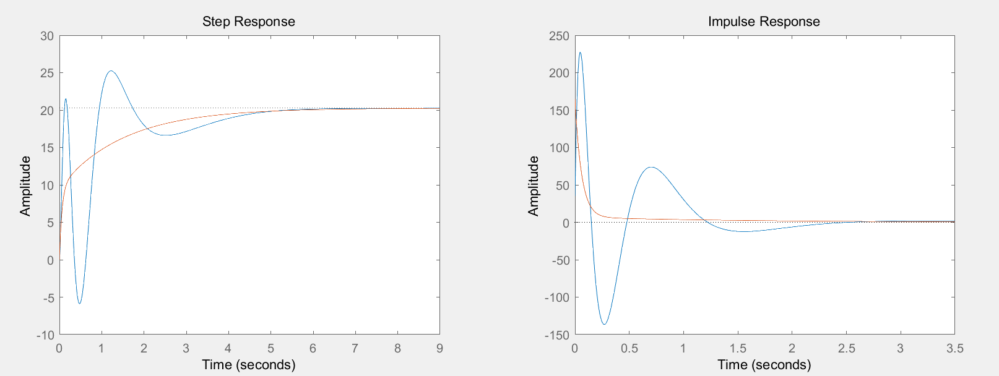
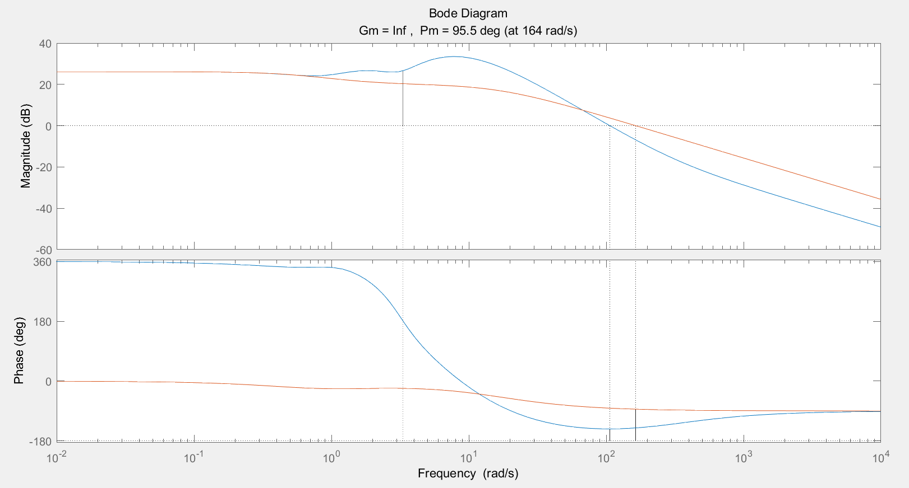
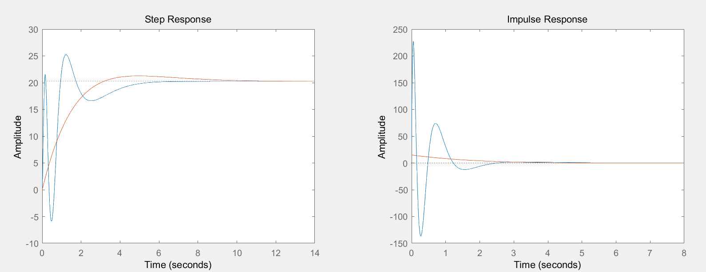
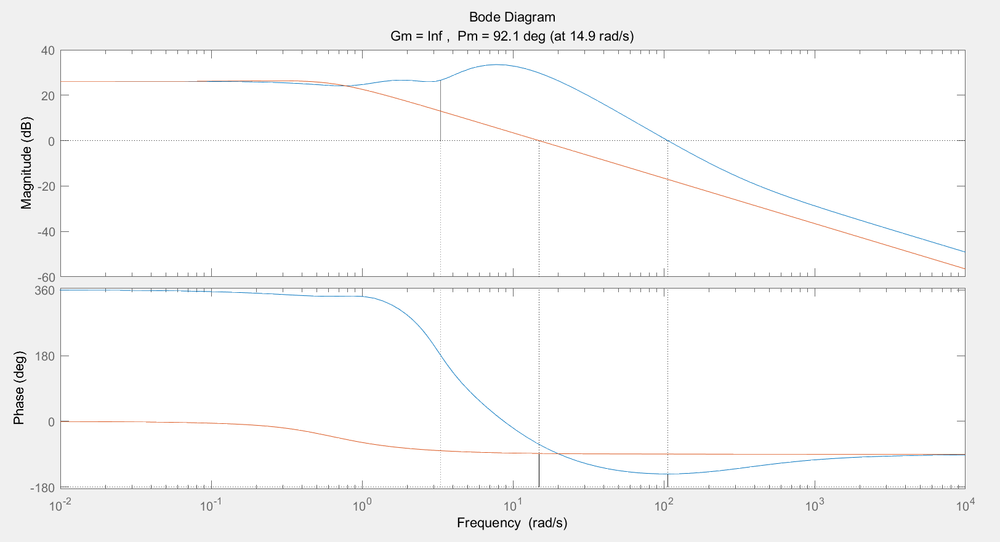

题目：对于高阶系统的设计问题，往往要进行降阶近似处理，并要验证近似效果。已知某高阶系统模型为:
经简化处理后，模型等效为:
求a、b、c、d、e，给出选取理由，用Matlab计算并绘图比较两个模型在单位阶跃信号作用下的响应情况，并分析近似效果。
matlab程序如下：
G0t = [35 10861 13285 82402 278376 511812 422964 194480]; G0f = [1 33 437 3017 11870 27470 37492 28880 9600]; G0 = tf(G0t,G0f); Gp = pademod(G0,1,2); figure(1) subplot(1,2,1) step(G0);hold on step(Gp); hold off subplot(1,2,2) impulse(G0,8);hold on impulse(Gp,8); hold off figure(2) margin(G0);hold on margin(Gp); hold off 
降阶后模型：
>> Gp Gp = 164.9 s + 217.4 --------------------- s^2 + 17.08 s + 10.73 Continuous-time transfer function.
其中，程序中用到的函数如下：
function Gr=pademod(G,r,k) c=timmomt(G,r+k+1); Gr=pade_app(c,r,k);
function M=timmomt(G,k) G=ss(G); C=G.c; B=G.b; iA=inv(G.a); iA1=iA; M=zeros(1,k); for i=1:k, M(i)=-C*iA1*B; iA1=iA*iA1; end
function Gr=pade_app(c,r,k) w=-c(r+2:r+k+1)'; vv=[c(r+1:-1:1)'; zeros(k-1-r,1)]; W=rot90(hankel(c(r+k:-1:r+1),vv)); V=rot90(hankel(c(r:-1:1))); x=[1 (W\w)']; dred=x(k+1:-1:1)/x(k+1); y=[c(1) x(2:r+1)*V'+c(2:r+1)]; nred=y(r+1:-1:1)/x(k+1); Gr=tf(nred,dred);
matlab程序如下：
G0t = [35 10861 13285 82402 278376 511812 422964 194480]; G0f = [1 33 437 3017 11870 27470 37492 28880 9600]; G0 = tf(G0t,G0f); Gr = routhmod(G0,2); figure(1) subplot(1,2,1) step(G0);hold on step(Gr); hold off subplot(1,2,2) impulse(G0,8);hold on impulse(Gr,8); hold off figure(2) margin(G0);hold on margin(Gr); hold off 
降阶后模型：
>> Gr Gr = 14.91 s + 6.857 ---------------------- s^2 + 1.018 s + 0.3385 Continuous-time transfer function.
其中，程序中用到的函数如下：
function Gr=routhmod(G,nr) num=G.num{1}; den=G.den{1}; n0=length(den); n1=length(num); a1=den(end:-1:1); b1=[num(end:-1:1) zeros(1,n0-n1-1)]; for k=1:n0-1, k1=k+2; alpha(k)=a1(k)/a1(k+1); beta(k)=b1(k)/a1(k+1); for i=k1:2:n0-1, a1(i)=a1(i)-alpha(k)*a1(i+1); b1(i)=b1(i)-beta(k)*a1(i+1); end, end nn=[]; dd=[1]; nn1=beta(1); dd1=[alpha(1),1]; nred=nn1; dred=dd1; for i=2:nr, nred=[alpha(i)*nn1, beta(i)]; dred=[alpha(i)*dd1, 0]; n0=length(dd); n1=length(dred); nred=nred+[zeros(1,n1-n0),nn]; dred=dred+[zeros(1,n1-n0),dd]; nn=nn1; dd=dd1; nn1=nred; dd1=dred; end Gr=tf(nred(nr:-1:1),dred(end:-1:1));